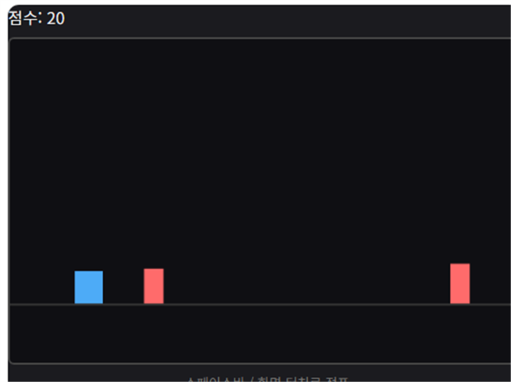

점프 러너는 캐릭터가 자동으로 앞으로 달리는 동안, 클릭이나 스페이스바로 점프시켜 다가오는 장애물을 피하는 러너 게임입니다. 오래 살아남을수록 점수가 올라갑니다.
기본 규칙
- 클릭, 터치, 또는 스페이스바로 캐릭터를 점프시킵니다.
- 장애물에 부딪히면 게임이 종료됩니다.
- 시간이 지날수록 이동 속도가 빨라져 장애물이 더 자주 다가옵니다.
- 생존 시간에 비례해 점수가 오릅니다.
오래 살아남는 팁
1. 장애물이 화면에 나타나는 즉시 타이밍을 계산하세요
점프에는 상승과 하강 시간이 있어서, 장애물이 가까이 온 뒤에 반응하면 이미 늦는 경우가 많습니다. 장애물이 보이자마자 점프 타이밍을 미리 가늠해두는 습관이 중요합니다.
2. 연속 장애물은 짧게 끊어 점프하세요
장애물이 연달아 나오는 구간에서는 점프를 너무 크게, 오래 유지하면 착지 타이밍이 다음 장애물과 겹칩니다. 필요한 만큼만 짧게 점프하는 것이 안전합니다.
직접 플레이해보고 싶다면 여기서 바로 시작할 수 있습니다.